Stay Inspired
Deepen Your Practice
- Stay Current On New Yoga Research
- Learn Yoga Anatomy-Based Keys To A Safe Practice
- Get Creative Insights And Learn New Skills
Featured Articles
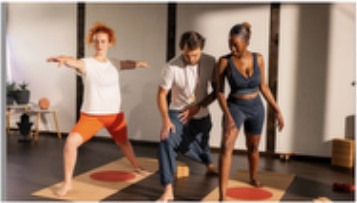
Beginning YogaThe First Yama: Ahimsa — Nonviolence
In the Yoga Sutras, Patanjali delineated the eight limbs of yoga. These precepts are…
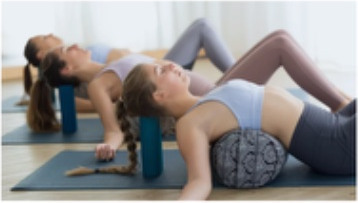
Yoga TeachingJudith Hanson Lasater: The Greatest Gift of Yoga Asana
All I remember of my first asana (posture) class is the ceiling. Between movements,…
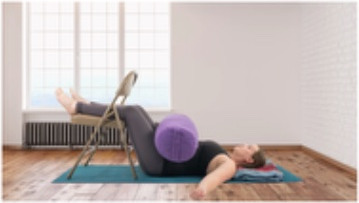
Stress ReliefFascia and the Vagus Nerve: Healing from the Inside Out
Have you ever had a morning in which you woke up with a painful…
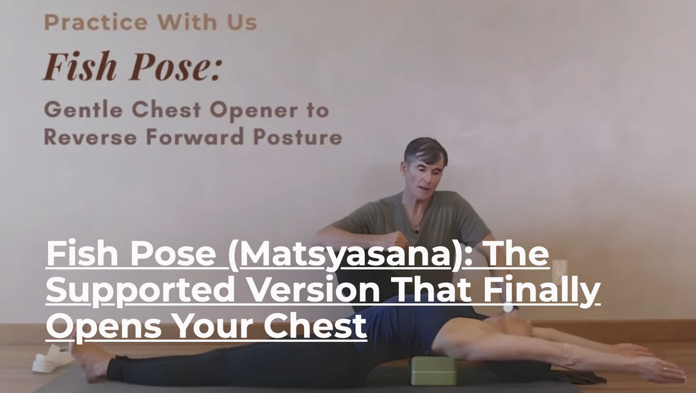
Beginning Yoga
Backbend Prep Poses: 3 Mild Yoga Backbends for Energy and Focus
What are the best backbend prep poses, and why should we practice them? Backbending wakes up the spine, opens the chest, and builds steady energy for the rest of your practice.
Read the ArticleNew Articles In The Blog
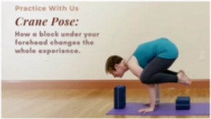
Yoga Practice TipsTry Crane Pose From a Block Before You Trust It to Your Arms
Most of us assume Crane Pose (Bakasana) is a matter of raw arm strength,…
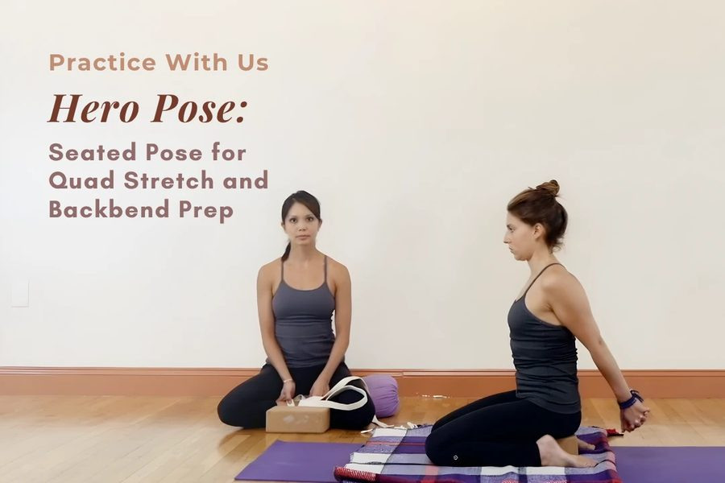
Yoga Practice TipsCow Face Pose: How a Block Under Your Hips Opens the Stacked-Knee Stretch
Cow Face Pose (Gomukhasana) has a reputation for being out of reach. You see…
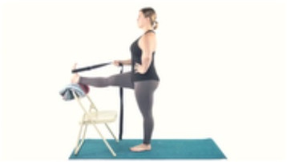
Yoga Practice TipsStanding Yoga Poses: The "Suspenders" Cue That Steadies Every One
If you are newer to yoga, the standing yoga poses can feel like a…
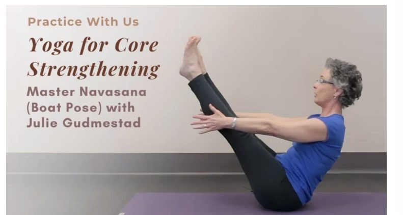
Yoga Practice TipsThe Real Engine of Boat Pose Is Your Whole Spine, Not Just Your Abs
When most of us settle into Boat Pose (Navasana), we brace for an ab…
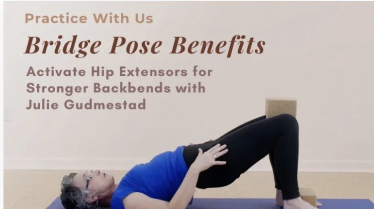
Yoga Practice TipsFull Wheel Pose: The Intermediate Step Most People Skip That Makes Everything Safer
Full Wheel Pose (Urdhva Dhanurasana) is one of yoga's deepest backbends. It asks for…
Gentle Yoga Flow: Why Slowing Down Produces Deeper Results Than Pushing Harder
There's a version of yoga that treats difficulty as progress — faster sequences, deeper…
Yoga Practice & Teaching Tips
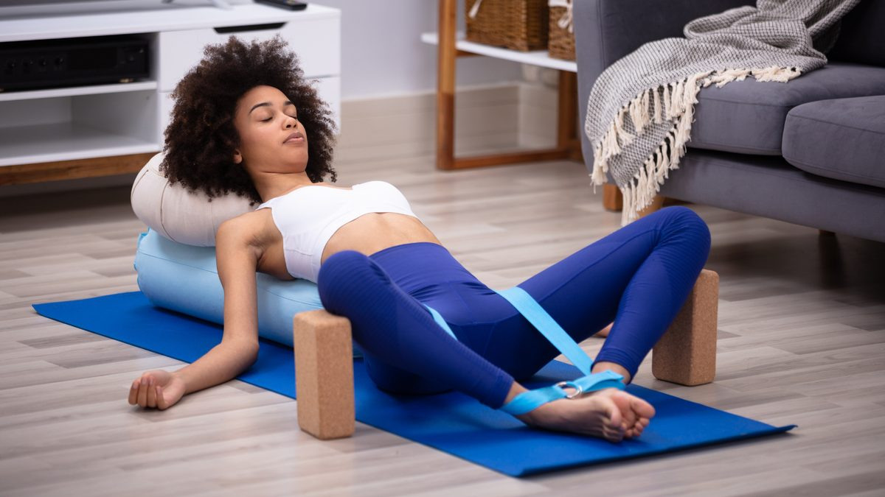
Beginning YogaRolling Right: How to Re-Enter after Savasana
Physical therapists and yoga teachers alike tell us that rolling to your side before…
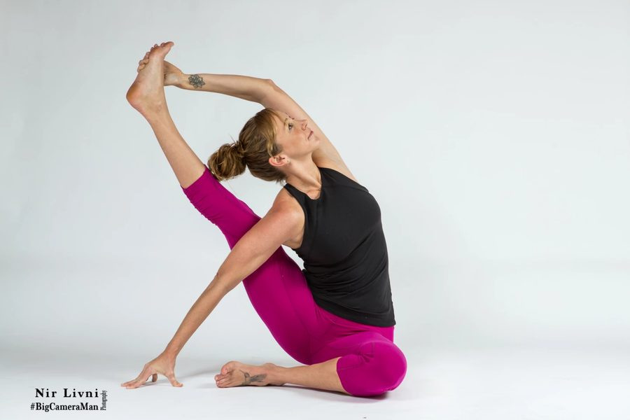
Beginning YogaYoga for Detoxification: How to Power Up Your Body's Natural Detox Processes
Yoga helps detox our bodies. Let's build heat in our practice today. Twist longer…
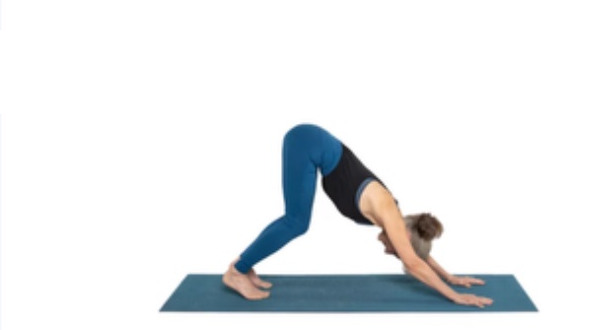
Yoga TeachingThe Weight Distribution Secret Inside Downward Facing Dog Pose That Protects Your Wrists
Downward Facing Dog Pose (Adho Mukha Svanasana) shows up in nearly every yoga class…
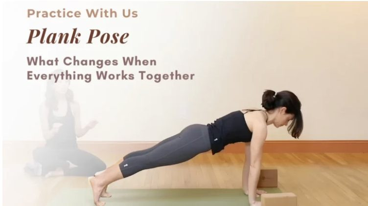
Yoga TeachingDolphin Pose: The Forearm Position That Makes It Therapeutic Instead of Painful
Dolphin Pose (Ardha Pincha Mayurasana) has a reputation for being humbling. Your arms shake…
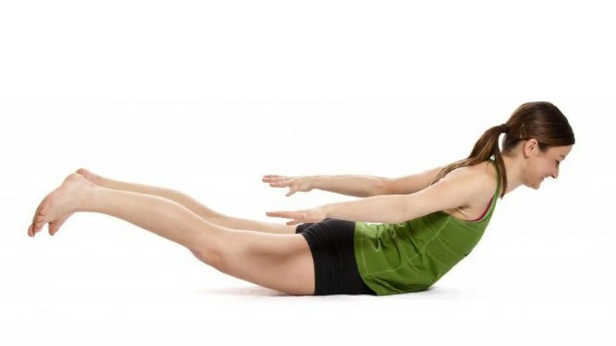
Yoga Practice TipsCobra Pose (Bhujangasana): What Your Back Muscles Need to Do
Cobra Pose looks simple. You lie on your stomach, press up, and arch your…
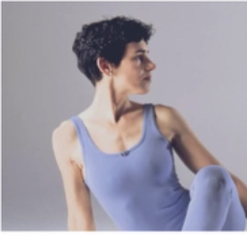
Yoga Practice TipsMoon Salutations: Cultivating Lunar Nectar (Tapping into Your Softer Side)
Moon Salutations: A Dose of Moon-Shine if you have been doing yoga for a…
Yoga for Every Body
From Beginner to Mastery — How to Build a Healthy Inversion Practice
With Julie Gudmestad
Yoga And Healthy Aging
Yoga for Osteoporosis: Why Bone Quality Matters as Much as Bone Density
Please note: This article is for educational purposes only and does not constitute medical…
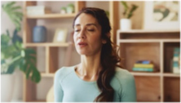
Yoga and Healthy AgingYoga for Osteoporosis: How Your Breathing Affects Your Bones
When we think about keeping our bones strong, most of us focus on getting…
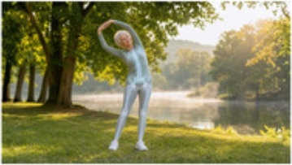
OsteoporosisWhat Your Dexa-Score Isn't Telling You: The Surprising Truth About Yoga for Osteoporosis and Fracture Prevention
Please note: This article is for educational purposes only and does not constitute medical…
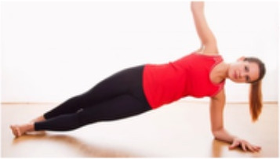
Back PainYoga in the Treatment of Scoliosis — A Doctor's Perspective
A sideways curvature of the spine characterizes scoliosis, which is surprisingly common. Most people…
Ayurvedic Herbal Remedies for High Blood Pressure
Nearly half of U.S. adults will experience high blood pressure at some point…
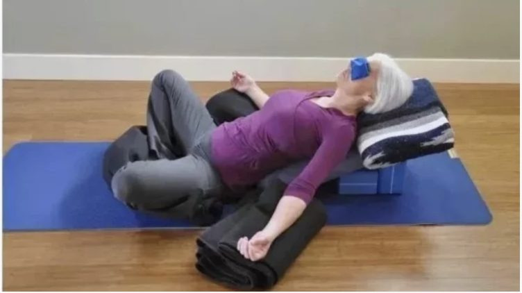
Yoga and Healthy AgingThe 3+1 Pillars of Healthy Aging: Are You Missing the Most Vital Component?
Most of us know the basics of aging well. But there's a fourth factor…
Upcoming Courses
Study Online with our Yoga Wellness and Teacher Ed. Courses
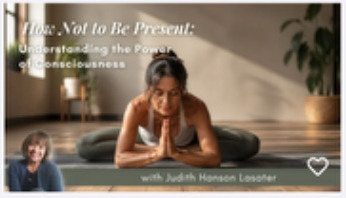
Online course